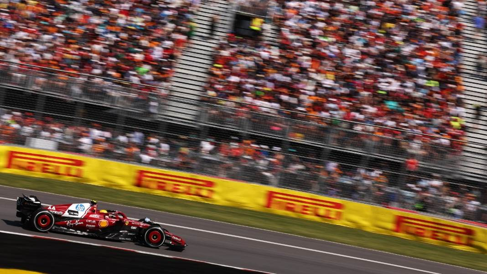
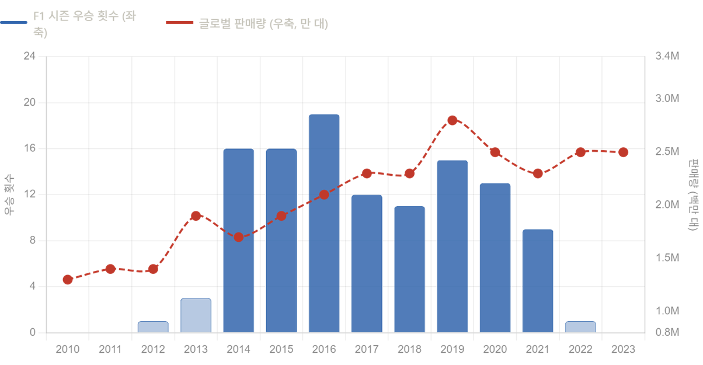
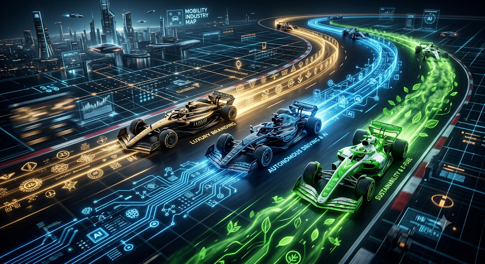
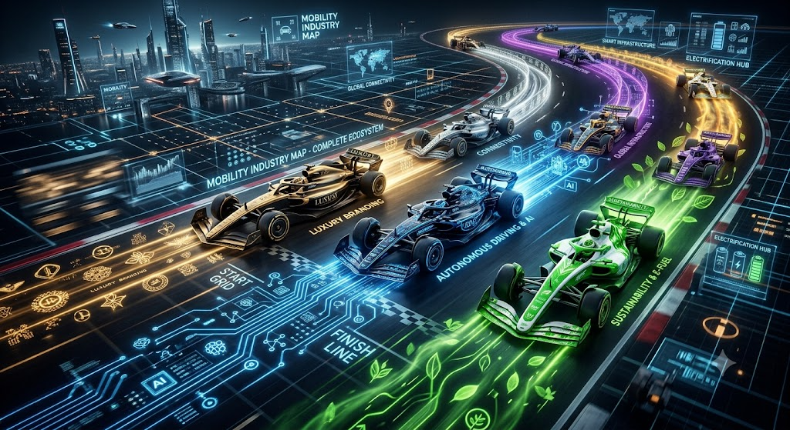
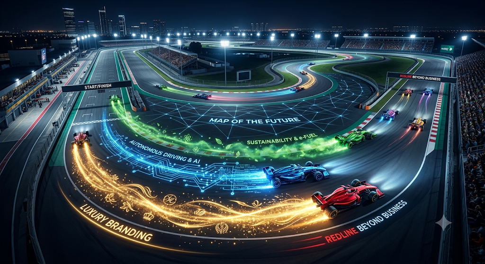

서킷 위의 모빌리티 축소판The Circuit as a Microcosm of Mobility
2025년 여름, 브래드 피트가 주연한 영화 F1 더 무비가 전 세계 극장을 강타했다. 포뮬러 1의 서킷을 배경으로 펼쳐진 이 영화는 단순한 액션 블록버스터를 넘어, 수백만 명의 새로운 팬들을 카레이싱의 세계로 끌어들이는 데 성공했다. 실제로 F1의 글로벌 누적 시청자 수는 2008년 약 6억 명에서 2017년 3억 5,200만 명으로 저점을 찍은 후, 드라이브 투 서바이브 방영과 함께 반등해 2018년 4억 9,000만 명으로 회복되었다.1 미국 ESPN 기준으로는 2018년 이후 시청자가 두 배 이상 성장해 2022년에는 경기당 평균 121만 명을 기록, 역대 최고치를 경신했다.2In the summer of 2025, the film F1: The Movie starring Brad Pitt swept theaters worldwide. Set against the backdrop of Formula 1 circuits, the film went beyond a simple action blockbuster, successfully drawing millions of new fans into the world of motorsport. F1's global cumulative viewership dropped from roughly 600 million in 2008 to a low of 352 million in 2017, then rebounded to 490 million in 2018 alongside the launch of Drive to Survive.1 On ESPN in the United States, viewership more than doubled since 2018, hitting an average of 1.21 million viewers per race in 2022 — an all-time high.2
그러나 카레이싱의 매력은 스크린 위에만 있지 않다. 시속 300킬로미터를 넘나드는 머신이 코너를 파고드는 순간, 관중은 단순한 스피드 이상의 무언가를 목격한다. 인간과 기계가 물리적 한계를 함께 밀어붙이는 그 장면은, 우리가 '자동차'라고 부르는 문명의 도구가 얼마나 멀리까지 진화할 수 있는지를 보여주는 살아있는 증거다.But the appeal of motorsport extends beyond the screen. When a machine pushing past 300 km/h carves through a corner, spectators witness something beyond mere speed. That image of human and machine together pushing the boundaries of physics is living proof of how far the civilizational tool we call the "automobile" can evolve.
그리고 여기, 한 가지 흥미로운 관점이 있다. F1은 단순한 스포츠가 아니라, 오늘날 모빌리티 산업 전체의 축소판이다. 럭셔리 브랜드가 '프리미엄'을 어떻게 설계하는지, 전기차 시대에 소비자는 어떤 가치에 지갑을 여는지, AI가 이동의 경제학을 어떻게 바꾸는지, 친환경 규제가 산업 판도를 어떻게 뒤흔드는지 — 이 모든 질문의 원형이 서킷 위에 이미 펼쳐져 있다. 이 글은 그 축소판을 먼저 들여다보는 일종의 지도다.And here lies an intriguing perspective. F1 is not merely a sport — it is a microcosm of the entire mobility industry today. How luxury brands engineer "premium," what values unlock consumer wallets in the age of EVs, how AI reshapes the economics of mobility, how environmental regulation upends industrial landscapes — the prototypes of all these questions are already playing out on the circuit. This article is a kind of map for reading that microcosm first.
경주는 어떻게 산업이 되었는가: 서킷에서 극한의 실험을 펼치다How Racing Became Industry: Extreme Experiments on the Circuit
카레이싱의 기원을 살펴보면, 그것은 처음부터 '스포츠'라기보다 '경쟁'이었다. 19세기 말 유럽에서 등장한 초기 자동차 레이스는 제조사들이 자사 엔진의 우월함을 공개적으로 증명하는 무대였다. 포뮬러 1이 공식 출범한 1950년, 알파 로메오와 페라리, 마세라티가 그란프리 서킷에서 맞붙었을 때 — 그건 스포츠 이벤트인 동시에 유럽 자동차 산업의 자존심을 건 기술 전쟁이었다.Looking at the origins of motorsport, it was always more "competition" than "sport." The early automobile races that emerged in late-19th-century Europe were stages for manufacturers to publicly prove the superiority of their engines. When Formula 1 officially launched in 1950 and Alfa Romeo, Ferrari, and Maserati clashed on the Grand Prix circuit — that was simultaneously a sporting event and a technology war staking the pride of the European automotive industry.
그 본질은 지금도 달라지지 않았다. F1 팀은 단 한 시즌을 위해 수천억 원을 쏟아붓는다. 메르세데스 AMG 페트로나스의 2023년 연간 매출은 5억 4,650만 파운드(약 9,200억 원)를 기록하며 F1 역사상 처음으로 £5억을 돌파했으며, 레이싱 운영 비용만 4억 1,360만 파운드에 달했다.3 이 막대한 비용을 단지 '레이스에서 이기기 위해' 지출한다고 보기는 어렵다. 더 정확히 말하면, 그들은 서킷을 일종의 모빌리티 기술의 연구개발 실험실로 사용하고 있다.That essence has not changed. F1 teams pour hundreds of billions of won into a single season. Mercedes AMG Petronas posted annual revenue of £546.5 million (roughly ₩920 billion) in 2023 — the first time in F1 history a team crossed the £500 million mark — with racing operating costs alone reaching £413.6 million.3 It is hard to view this enormous expenditure as simply "spending to win races." More accurately, they are using the circuit as a kind of R&D laboratory for mobility technology.
F1 머신 한 대에는 약 2만 개의 부품이 들어간다.4 시즌 중 주행하는 거리는 고작 수천 킬로미터에 불과하지만, 그 짧은 주행에서 쌓이는 데이터와 기술 검증의 밀도는 일반 도로 주행과 비교가 되지 않는다. 극한의 온도, 진동, 하중 — 레이싱 환경은 양산차가 평생 맞닥뜨릴 수 없는 조건들을 단 몇 시간 안에 시뮬레이션한다. 그 과정에서 살아남은 기술만이 다음 단계로 이행된다.A single F1 car contains roughly 20,000 components.4 The distance covered in a season amounts to only a few thousand kilometers, yet the density of data and technical validation packed into that short mileage is incomparable to ordinary road driving. Extreme temperatures, vibrations, loads — the racing environment simulates in a matter of hours conditions that a production car may never encounter in its lifetime. Only the technology that survives that process advances to the next stage.
브랜드 서사가 만든 판매량의 법칙The Sales Law Written by Brand Narrative
기술 전이만큼이나 중요한 것이 브랜드의 이야기다. 카레이싱은 자동차 제조사들에게 광고판 그 이상의 역할을 한다. 그것은 '브랜드 서사'를 구축하는 가장 강렬한 무대다.Equally important as technology transfer is the story of the brand. Motorsport serves automakers as far more than a billboard. It is the most intense stage for building a "brand narrative."
페라리를 생각해보자. 붉은 색의 SF-23이 모나코 그랑프리 터널을 통과하는 이미지는, 어떤 광고 카피도 대체할 수 없는 감정적 각인을 남긴다. 페라리의 F1 참가는 단지 레이스에서 이기기 위한 것이 아니다. 그들의 로드카 — 296 GTB, SF90 스트라달레 — 가 왜 그 가격표를 정당화할 수 있는지를 세계에 증명하는 과정이다. "우리는 서킷에서도 같은 기술을 씁니다"라는 메시지는, 어떤 마케팅 예산으로도 사기 어려운 신뢰를 만든다.Consider Ferrari. The image of the red SF-23 threading through the Monaco Grand Prix tunnel leaves an emotional imprint that no advertising copy can replicate. Ferrari's participation in F1 is not simply about winning races. It is the process of proving to the world why their road cars — the 296 GTB, the SF90 Stradale — deserve their price tags. The message "we use the same technology on the circuit" creates trust that no marketing budget can buy.
메르세데스 역시 2010년대 F1에서 거둔 압도적인 성적을 AMG 라인업의 프리미엄 포지셔닝에 직접 연결했다. 메르세데스의 F1 팀은 스스로 팀의 기능을 "마케팅 부서, R&D 연구소, 프레스티지 생성기"로 규정하며, 레이싱 운영의 손실을 감수하더라도 브랜드 가치 향상으로 모기업 다임러에 돌아가는 편익이 훨씬 크다고 분석한다.5 실제로 메르세데스 팀의 2023년 광고 가치 환산액(AVE)은 53억 달러에 달했다.6Mercedes likewise directly linked its dominant F1 results of the 2010s to the premium positioning of the AMG lineup. The Mercedes F1 team describes its own function as "marketing department, R&D lab, prestige generator," arguing that even if racing operations run at a loss, the benefit returned to parent company Daimler through enhanced brand value far outweighs the cost.5 Indeed, the Mercedes team's Advertising Value Equivalent (AVE) reached $5.3 billion in 2023.6
이 주장을 데이터로 확인해보자. F1 우승 횟수와 메르세데스 벤츠 글로벌 판매량을 2010년부터 2023년까지 매칭해 R로 분석한 결과, 두 변수 사이의 피어슨 상관계수는 r = 0.73으로 나타났다 — 통계적으로 강한 양의 상관관계다.Let's verify this claim with data. Matching F1 championship wins against Mercedes-Benz global sales volumes from 2010 to 2023 and running an analysis in R, the Pearson correlation coefficient between the two variables came out at r = 0.73 — a statistically strong positive correlation.

F1 우승 횟수와 벤츠 글로벌 판매량 지표에서 나타나는 패턴은 선명하다. 메르세데스가 F1에서 존재감이 없었던 2010~2013년 판매량은 127만 대 수준에 머물렀다. 그러나 2014년 하이브리드 파워유닛 규정이 도입되고 압도적인 우승 행진이 시작되면서 흐름이 바뀐다. 2019년에는 282만 대로 2013년 대비 약 52% 급증했다. 2022~2023년 우승이 급감했음에도 판매량이 245~249만 대를 유지한 것도 흥미롭다. 서킷에서 수년간 쌓아올린 브랜드 자산이 '지연 효과(lag effect)'로 소비자 인식 속에 남아 있는 것이다 — 승리가 멈추어도 신뢰는 쉽게 사라지지 않는다.The pattern in F1 wins and Mercedes global sales figures is clear. During 2010–2013, when Mercedes had little presence in F1, sales hovered around 1.27 million units. But when the hybrid power unit regulations were introduced in 2014 and the dominant winning streak began, the trend shifted. By 2019 sales had surged to 2.82 million units — roughly 52% above 2013 levels. Equally notable is that even as wins dropped sharply in 2022–2023, sales held steady at 2.45–2.49 million units. The brand equity built on the circuit over years remained embedded in consumer perception through a "lag effect" — when the wins stopped, the trust did not quickly fade.
혼다의 사례는 더 직접적이다. 혼다는 F1 복귀 직후인 2021년 레드불과의 파트너십을 통해 세계 챔피언십을 차지했고, 이후 전동화 전략을 공격적으로 앞당겼다. "F1에서 증명된 전기모터 기술"은 혼다 e:HEV 하이브리드 라인업의 핵심 마케팅 언어가 되었다.Honda's case is even more direct. In 2021, shortly after returning to F1, Honda captured the World Championship through its partnership with Red Bull, and subsequently accelerated its electrification strategy aggressively. "Electric motor technology proven in F1" became the core marketing language for the Honda e:HEV hybrid lineup.
결국 카레이싱은 자동차 브랜드에게 일반 광고가 도달하기 어려운 영역 — 감정, 신화, 기술적 권위 — 에 접근하는 통로다. 서킷에서의 승리는 브랜드 역사에 새겨지고, 그 역사는 쇼룸에서 판매로 이어진다.Ultimately, motorsport is a channel through which automotive brands access territory that conventional advertising struggles to reach — emotion, myth, and technical authority. Victory on the circuit is etched into brand history, and that history translates into sales in the showroom.
하드웨어에서 소프트웨어로: 기술의 낙수효과From Hardware to Software: The Trickle-Down of Technology
카레이싱이 자동차 기술 발전에 기여한 방식 중 가장 직접적인 것은 기술의 이전이다. 오늘날 우리가 타는 일반 차량에는 레이싱 경험에서 비롯된 기술들이 곳곳에 스며들어 있다.The most direct way motorsport has contributed to automotive technology development is through technology transfer. Today's ordinary vehicles are infused throughout with technologies born from racing experience.
차체를 감싸는 탄소섬유, 급정거를 가능하게 하는 고성능 브레이크, 연료를 아끼면서도 더 강한 힘을 내는 하이브리드 에너지 회수 시스템 — 이 모두가 처음엔 레이싱카를 위해 개발된 기술이다. F1이라는 극한의 환경에서 살아남은 기술만이 양산차로 내려온다.Carbon fiber encasing the body, high-performance brakes enabling emergency stops, hybrid energy recovery systems that deliver more power while saving fuel — all of these were originally developed for racing cars. Only the technologies that survive the extreme environment of F1 make it down to production vehicles.
가장 최근의 사례는 에너지 회수 시스템(ERS, Energy Recovery System)이다. 브레이크를 밟을 때 버려지던 에너지를 전기로 바꿔 다시 쓰는 이 기술은, F1이 2014년 하이브리드 엔진을 의무화하면서 본격적으로 발전했다. 지금은 우리가 흔히 타는 하이브리드카에도 같은 원리가 적용된다. 서킷이 10년 앞서 실험한 것을, 도로가 뒤따라오는 셈이다.The most recent example is the Energy Recovery System (ERS). This technology, which converts energy that was previously wasted under braking back into electricity for reuse, advanced in earnest when F1 mandated hybrid engines in 2014. Today the same principle is applied in the hybrid cars we commonly drive. The road is following where the circuit led a decade earlier.
이러한 기술 이전의 흐름은 이제 하드웨어의 경계를 넘어 소프트웨어라는 무형의 영역으로 확장되고 있다. F1 피트레인에서는 이미 소프트웨어 업데이트 하나로 차량의 퍼포먼스가 바뀌는 일이 일상이다. 스마트폰 앱을 업데이트하듯 차량의 성능 자체를 원격으로 바꿀 수 있는 SDV(Software Defined Vehicle) — 오늘날 테슬라로 대표되는 이 개념이 사실 F1 피트레인에서 먼저 현실이 되었다.This flow of technology transfer is now expanding beyond the boundary of hardware into the intangible domain of software. In the F1 pit lane, it is already routine for a single software update to change a car's performance. The Software Defined Vehicle (SDV) — the concept of remotely altering the very performance of a car just as one updates a smartphone app, exemplified today by Tesla — first became reality in the F1 pit lane.
레이싱 경기에서의 데이터 활용 방식도 마찬가지다. 레이스 내내 수백 개의 센서가 실시간으로 데이터를 전송하고, 피트월의 엔지니어들이 이를 즉각 주행 전략에 반영한다. 이러한 F1의 구조는 카카오택시나 우버처럼 AI가 배차를 최적화하는 모빌리티 플랫폼, 그리고 자율주행 알고리즘이 작동하는 방식과 놀랍도록 닮아 있다.The same is true of how data is used in racing. Hundreds of sensors transmit data in real time throughout a race, and engineers at the pit wall instantly incorporate it into driving strategy. This F1 structure is strikingly similar to how mobility platforms like Kakao T or Uber optimize dispatch with AI, and how autonomous driving algorithms operate.
결국 F1은 단순히 속도의 한계를 다투는 경주가 아니다. 서킷에서 먼저 검증된 기술과 데이터가 우리가 탈 미래 모빌리티 모습을 미리 그리고 있다.In the end, F1 is not simply a competition over the limits of speed. The technologies and data validated first on the circuit are already sketching the shape of the future mobility we will ride.
서킷이 가리키는 방향Where the Circuit Points
카레이싱의 역사는 결국 모빌리티 산업의 과거이자 현재이자 미래다. 카레이싱은 언제나 현재보다 한발 앞에 있었다. 1980년대 F1이 터보차저를 탑재했을 때 도로 위 터보 차량은 아직 소수였고, 2014년 하이브리드 파워유닛이 의무화됐을 때 대부분의 소비자들은 여전히 하이브리드차를 낯설어했다. 그리고 지금, F1은 2026년 규정 변경을 통해 100% 지속 가능 연료 도입 의무화와 전동화 비중 확대를 동시에 추구하고 있다.7The history of motorsport is ultimately the past, present, and future of the mobility industry. Motorsport has always been one step ahead. When F1 mounted turbochargers in the 1980s, turbocharged road cars were still rare. When hybrid power units were mandated in 2014, most consumers still found hybrid vehicles unfamiliar. And now, through the 2026 regulation changes, F1 is simultaneously pursuing mandatory adoption of 100% sustainable fuels and an expanded electrification share.7
서킷에서 시작된 브랜드 신화는 오늘날 럭셔리카의 가격표를 정당화하고, 친환경 규제와 전기차 전환은 지금 이 순간 기업의 생존을 가르고 있으며, AI와 자율주행은 우리가 아직 경험하지 못한 이동의 형태를 예고하고 있다.The brand mythology born on the circuit justifies today's luxury car price tags. Environmental regulation and the EV transition are at this very moment determining corporate survival. And AI and autonomous driving are foreshadowing forms of mobility we have yet to experience.
이제 시선을 서킷 너머, 우리의 일상으로 돌려볼 차례다.It is time to shift our gaze beyond the circuit, to our everyday lives.


